00이 매뉴얼에 대하여
소방 펌프 계산서 통합 포털은 옥내소화전 · 옥외소화전 · 스프링클러 · 간이스프링클러와 겸용 3종, 그리고 제연설비 · 비상발전기까지 MANMIN 소방 계산도구 9종의 진입 화면입니다. 이 포털 자체는 계산하지 않습니다. 카드를 눌러 계산서로 들어가고, 각 계산서의 사용자 매뉴얼을 엽니다. 설비별 기준값 · 겸용 원칙 · 판 번호를 한 화면에서 비교할 수 있습니다.
| 항목 | 내용 |
|---|---|
| 대상 프로그램 | 소방 펌프 계산서 통합 포털 MANMIN Ver-5.2(v5.2.0) |
| 접속 주소 | manminkim-eng.github.io/portal |
| 매뉴얼 판 | Ver-5.2 (화면 표기와 같은 판 번호, 초판) · 2026-10-16 · 작성 김만민 건축사(㈜대성건축사사무소) |
| 내려받기 | PDF(A4) · 포털 열기 |
| 근거 | NFPC 102 · 103 · 103A 소방청고시 제2025-25호 · NFPC 109 제2025-28호 · NFTC 102 국립소방연구원공고 제2026-34호 · 103 제2026-35호 · 103A 제2024-58호 · 109 제2026-9호 · 604 제2023-44호 · 501 제2024-52호 — LawMCP(국가법령정보센터) 원문 대조(2026-10-16) |
| 범위 | 안내 · 연결 도구 — 계산은 각 계산서에서 합니다. 제연설비 · 비상발전기는 별도 저장소의 외부 도구입니다 |
01한눈에 보기
설치 없이 브라우저에서 바로 열리는 단일 페이지(PWA)입니다. 입력값이 없고, 연결과 안내만 합니다.
1-1. 화면 구성
- 1기준 · 원문 대조
- 2포털 이름
- 3📘 포털 사용자 매뉴얼
- 4요약 5칸
- 5필터 탭 4개
| 영역 | 내용 |
|---|---|
| 머리 | 기준 · 원문 대조 날짜 · 시행일, 포털 이름, 「📘 포털 사용자 매뉴얼」 |
| 요약 5칸 · 필터 탭 | 도구 9종(펌프 7 · 기타 2) · NFTC · Hazen-Williams · PWA · A4 / 전체 · 단독 · 겸용 · 기타 |
| 카드 | 설비별 카드 — 카드를 누르면 계산서, 「📘 매뉴얼」을 누르면 그 계산서의 사용자 매뉴얼 |
| 비교표 · 법령 카드 · 계산식 요약 | 설비별 방수압 · 방수량 · 동시 개수 · 수원 · 방사시간과 판 번호 · Hazen-Williams · 전동기 동력식 |
| 📐 계산식 | 오른쪽 아래 — 이용방법 · 옥내 · 옥외 · 스프링클러 · 간이 · 겸용 6개 탭 안내 창 |
1-2. 연결 도구 9종
| 구분 | 도구 | 근거 | 매뉴얼 |
|---|---|---|---|
| 단독 | 옥내소화전 펌프 용량 계산서 | NFPC · NFTC 102 | 📘 Ver-5.1 |
| 단독 | 옥외소화전 펌프 용량 계산서 | NFPC · NFTC 109 | 📘 Ver-5.1 |
| 단독 | 스프링클러설비 펌프 용량 계산서 | NFPC · NFTC 103 | 📘 Ver-5.1 |
| 단독 | 간이스프링클러설비 펌프 용량 계산서 | NFPC · NFTC 103A | 📘 Ver-5.1 |
| 겸용 | 겸용 펌프(옥내 + 스프링클러) | NFTC 102 2.9 · 103 2.13 | 📘 Ver-5.1 |
| 겸용 | 겸용 펌프(옥내 + 간이) | NFTC 103A 2.10 · 102 2.9 | 📘 Ver-5.1 |
| 겸용 | 겸용 펌프(옥내 + 옥외) | NFPC 102 제12조 · 109 제11조 | 📘 Ver-5.1 |
| 기타(외부) | 제연설비 설계 계산서 | NFTC 501 | — |
| 기타(외부) | 비상발전기 용량 계산 | KEC · NFTC | — |
021분 따라하기
예: 옥내소화전과 옥외소화전을 펌프 하나로 겸용하는 현장 — 포털에서 맞는 계산서를 찾아 들어가 매뉴얼까지 여는 순서입니다.
- ① 포털 열기manminkim-eng.github.io/portal — 휴대전화는 「홈 화면에 추가」로 설치(3-1).
- ② 필터「겸용 설비」 탭을 누르면 겸용 카드 3장만 남습니다(3-2).
- ③ 카드 고르기「옥내소화전 + 옥외소화전」 카드 — 근거 NFPC 102 제12조 · 109 제11조, 토출량 · 수원 항상 합산(3-4).
- ④ 매뉴얼카드의 「📘 매뉴얼」 — 그 계산서의 사용자 매뉴얼(Ver-5.1)이 새 창으로 열립니다.
- ⑤ 계산서카드를 누르면 계산서로 이동 — 옥내 → 옥외 → 겸용 결과 → A4 계산서 순으로 입력합니다.
- ⑥ 기준 확인포털로 돌아와 비교표 · 법령 카드에서 설비별 기준과 판 번호를 확인합니다(3-6 · 3-7).
- 1겸용 설비만 보기
- 2겸용 카드 3장
03화면별 기능
3-1. 머리 · 매뉴얼
- 1NFPC · NFTC 원문 대조 · 시행일
- 2ENGINEER KIM MANMIN
- 3포털 설명
- 4📘 포털 사용자 매뉴얼
맨 위 표시줄은 원문 대조 날짜와 옥내소화전 · 스프링클러 기준의 시행일(2026. 7. 1.)입니다. 「📘 포털 사용자 매뉴얼」은 이 문서를 엽니다(온라인 전용).
3-2. 필터 탭
- 1전체 보기 9
- 2단독 설비 4
- 3겸용 설비 3
- 4기타 설비 2
「전체 보기 9」 · 「단독 설비 4」 · 「겸용 설비 3」 · 「기타 설비 2」 — 누르면 해당 묶음만 보여 줍니다.
3-3. 단독 설비 카드
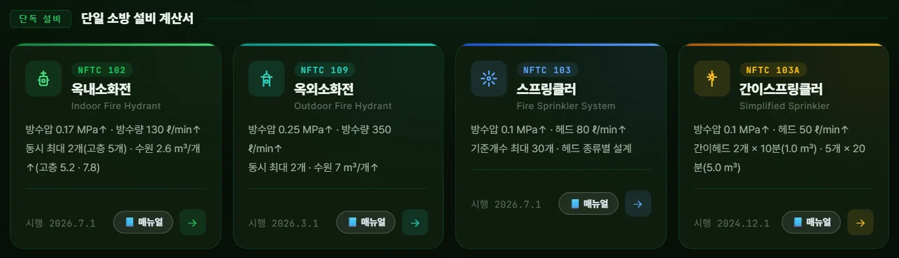
12345- 1옥내소화전 — NFTC 102
- 2옥외소화전 — NFTC 109
- 3스프링클러 — NFTC 103
- 4간이스프링클러 — NFTC 103A
- 5📘 매뉴얼(계산서별)
| 카드 | 안내 내용 |
|---|---|
| 옥내소화전 | 0.17 MPa · 130 L/min 이상 · 동시 2개(고층 5개) · 수원 2.6 m³/개(고층 5.2 · 7.8) — NFPC 102 제4조① · 제5조①3호 · NFTC 604 2.1.1 |
| 옥외소화전 | 0.25 MPa · 350 L/min 이상 · 동시 2개 · 수원 7 m³/개 — NFPC 109 제4조① · 제5조①3호 |
| 스프링클러 | 헤드 0.1 MPa · 80 L/min 이상 · 기준개수(표 2.1.1.1) × 1.6 m³ — NFTC 103 2.1.1.1 |
| 간이스프링클러 | 간이헤드 0.1 MPa · 50 L/min 이상 · 2개 × 10분(1.0 m³) · 5개 × 20분(5.0 m³) — NFTC 103A 2.1.1.2 |
3-4. 겸용 설비 카드
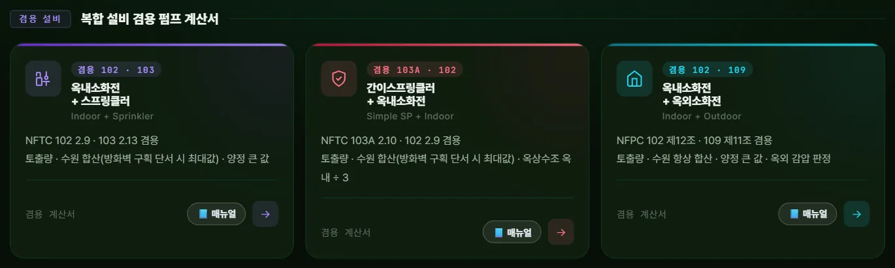
123- 1옥내 + 스프 — 102 · 103
- 2간이 + 옥내 — 103A · 102
- 3옥내 + 옥외 — 102 · 109
세 카드 모두 토출량 · 수원은 합산, 전양정은 두 설비 중 큰 값입니다. 옥내 + 스프 · 간이 + 옥내는 고정식 소화설비가 방화벽과 방화문으로 구획된 경우 단서로 최대값을 쓸 수 있고, 옥내 + 옥외는 단서 대상이 아니어서 항상 합산합니다(4-3). 카드의 예시 유량 「옥내 Q 260 L/min」은 일반 건축물 2개 기준이며, 고층건축물은 옥내소화전 펌프를 전용으로 둡니다.
3-5. 기타 설비 카드
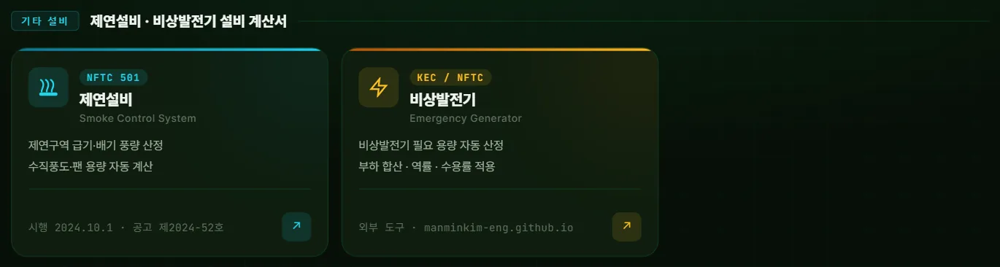
12- 1제연설비 — NFTC 501(외부 도구)
- 2비상발전기(외부 도구)
제연설비(NFTC 501 거실 제연 · 공고 제2024-52호)와 비상발전기는 별도 저장소의 외부 도구입니다(↗ 표시). 부속실 제연의 차압(최소 40 Pa, 스프링클러가 있으면 12.5 Pa)은 NFTC 501A 2.3.1 기준이며, 연결된 제연 도구는 NFTC 501 계산서입니다.
3-6. 설계 기준 비교표
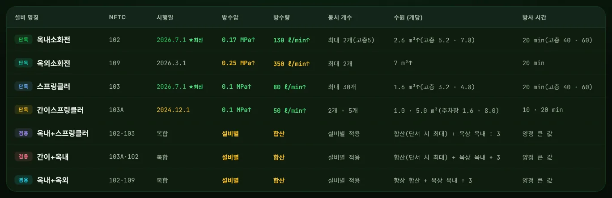
12- 1간이 — 2 · 5개 · 1.0 · 5.0 m³
- 2겸용 — 항상 합산 + 옥상 옥내 ÷ 3
행의 설비 이름을 누르면 그 계산서로 이동합니다. 겸용 행은 「합산(단서 시 최대) + 옥상 옥내 ÷ 3」 · 「양정 큰 값」으로 원칙을 요약합니다.
3-7. 법령 기준 카드
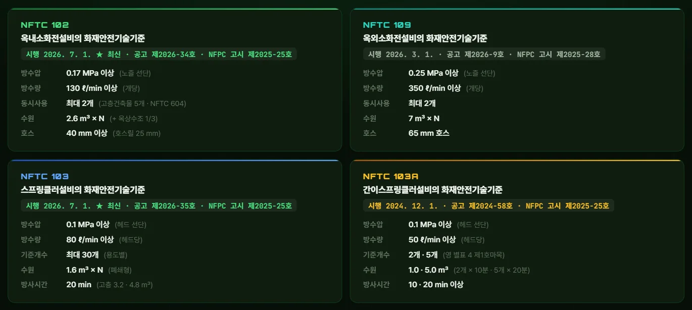
1234- 1NFTC 102 — 공고 제2026-34호
- 2NFTC 109 — 공고 제2026-9호
- 3NFTC 103 — 공고 제2026-35호
- 4NFTC 103A — 공고 제2024-58호
카드마다 시행일 · NFTC 공고번호 · NFPC 고시번호를 함께 적었습니다. ★ 최신은 2026. 7. 1. 시행분(NFTC 102 · 103)입니다.
3-8. 계산식 요약
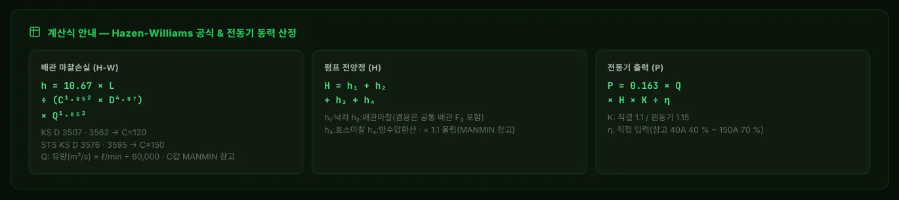
123- 1H-W — Q(m³/s)
- 2전양정 — F₀ · × 1.1
- 3전동기 — K · η 입력
3-9. 계산식 안내 창
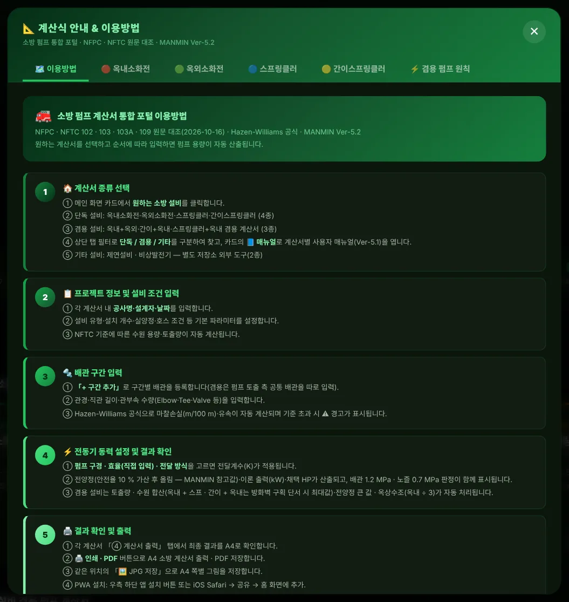
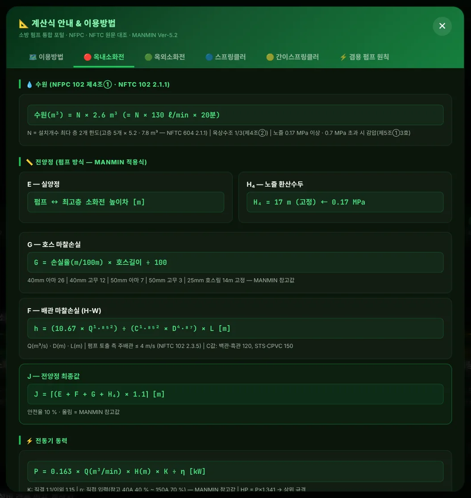
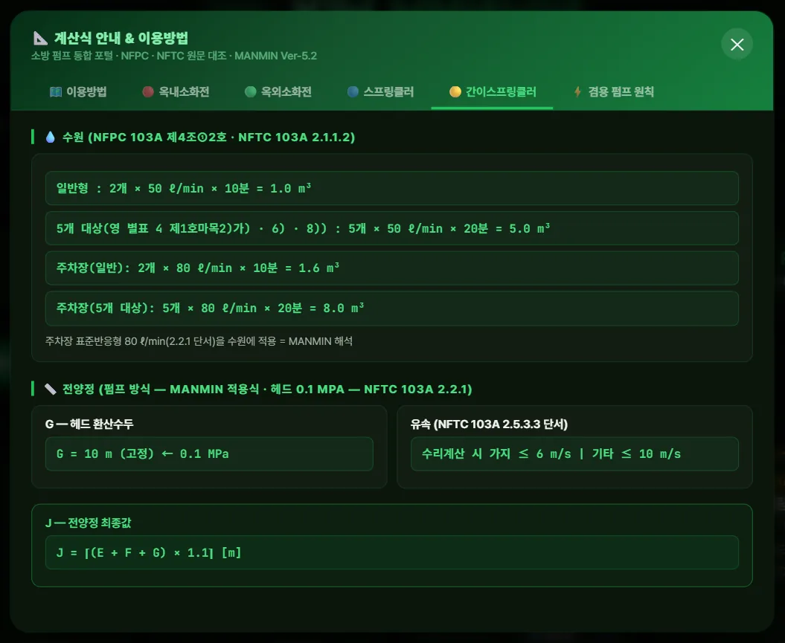
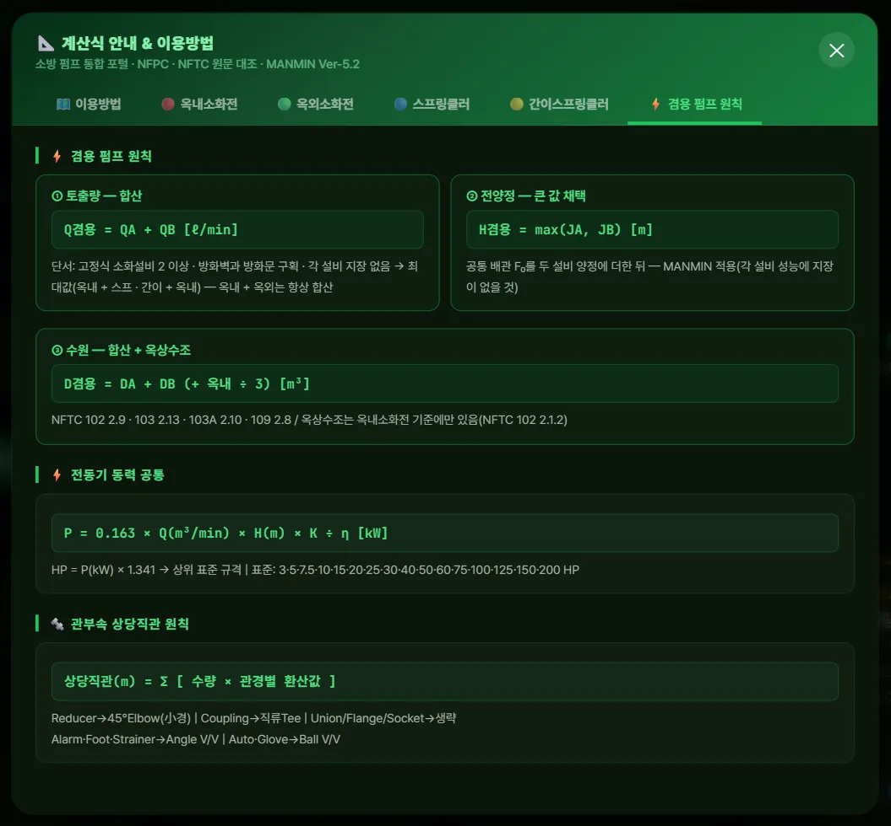
이용방법 탭은 01~07 계산서 v5.1.0의 실제 탭 이름(「④ 계산서 출력」 · 「🖼️ JPG 저장」 · 「+ 구간 추가」)과 공통 배관 · 압력 판정을 안내합니다. 설비별 탭은 수원 · 전양정 식과 근거 조문을, 겸용 탭은 합산 · 단서 · 큰 값 · 옥상수조 원칙을 정리합니다.
3-10. 휴대전화 화면
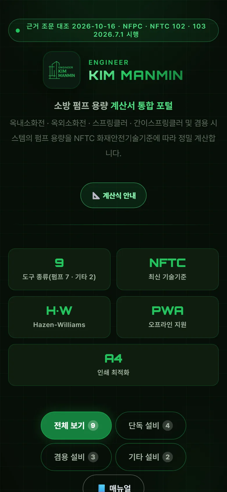
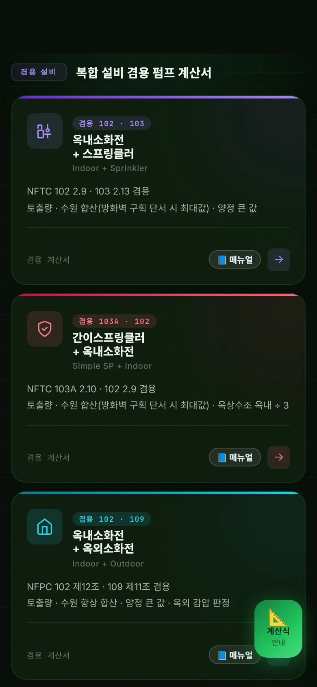
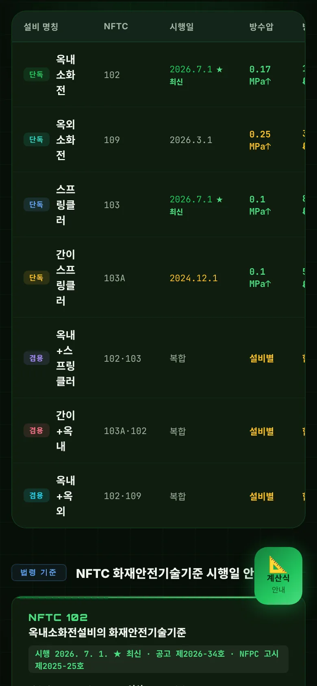
좁은 화면에서는 카드가 한 줄씩 쌓이고, 비교표는 좌우로 밀어서 봅니다.
04기준 해설
4-1. 근거 체계
| 기준 | 판 · 시행 |
|---|---|
| NFPC 102 · NFTC 102 | 옥내소화전 — 소방청고시 제2025-25호 · 국립소방연구원공고 제2026-34호(2026. 7. 1.) |
| NFPC 109 · NFTC 109 | 옥외소화전 — 소방청고시 제2025-28호 · 공고 제2026-9호(2026. 3. 1.) |
| NFPC 103 · NFTC 103 | 스프링클러 — 소방청고시 제2025-25호 · 공고 제2026-35호(2026. 7. 1.) |
| NFPC 103A · NFTC 103A | 간이스프링클러 — 소방청고시 제2025-25호 · 공고 제2024-58호(2024. 12. 1.) |
| NFTC 604 | 고층건축물 — 공고 제2023-44호 |
| NFTC 501 · 501A | 제연 — 공고 제2024-52호(2024. 10. 1.) · 부속실 제연 제2026-36호(2026. 7. 1.) |
4-2. 설비별 기준 요약
| 설비 | 방수압 | 방수량 | 동시 · 기준개수 | 수원 |
|---|---|---|---|---|
| 옥내소화전 | 0.17 MPa | 130 L/min | 2개(고층 5) | 2.6 m³ × N(고층 5.2 · 7.8) + 옥상 1/3 |
| 옥외소화전 | 0.25 MPa | 350 L/min | 2개 | 7 m³ × N |
| 스프링클러 | 0.1 MPa | 80 L/min | 표 2.1.1.1 기준개수 | 1.6 m³ × 기준개수(고층 3.2 · 50층↑ 4.8 — NFTC 604 2.2.1) |
| 간이스프링클러 | 0.1 MPa | 50 L/min | 2 · 5개 | 2개 × 10분 1.0 m³ · 5개 × 20분 5.0 m³(주차장 80 L/min — 1.6 · 8.0) |
4-3. 겸용 원칙
| 항목 | 기준 |
|---|---|
| 토출량 · 수원 | 각 소화설비 값을 합한 양 이상 — NFPC 102 제12조 · NFPC 109 제11조 · NFTC 102 2.9 · 103 2.13 · 103A 2.10 · 109 2.8 |
| 단서(최대값) | 고정식 소화설비가 2 이상이고 방화벽과 방화문으로 구획(토출량은 각 설비에 지장 없을 것) — 옥내 + 스프 · 간이 + 옥내에 해당 가능, 옥내 + 옥외는 해당 없음 |
| 전양정(MANMIN 적용) | 두 설비 양정 중 큰 값 — 공통 배관 손실을 두 설비에 모두 더한 뒤 |
| 옥상수조 | 옥내소화전 유효수량의 1/3(NFTC 102 2.1.2) — 스프링클러 · 간이 · 옥외 기준과 합산하지 않음 |
4-4. 고층건축물
고층건축물(30층 이상 또는 높이 120 m 이상)은 옥내소화전 5개 × 5.2 m³(50층 이상 7.8 m³)이고(NFTC 604 2.1.1), 옥내소화전 펌프를 전용으로 설치하고 예비펌프를 둡니다(2.1.3). 그래서 겸용 계산서 3종은 고층건축물을 고르면 겸용 펌프 불가 경고를 띄웁니다.
4-5. v5.2.0 정정 (2026-10-16)
| 항목 | 기존 | 정정 |
|---|---|---|
| 제연 카드 | 「차압 50 Pa 이상」 | NFTC 501에는 차압 규정 없음(차압은 501A 2.3.1 — 40 Pa · 12.5 Pa) → 「범위 · 거실 제연」 |
| 간이 수원 | 「0.5 ~ 1.0 m³ · 10 min」 | 1.0 · 5.0 m³ · 10 · 20 min(NFTC 103A 2.1.1.2) |
| 겸용 원칙 | 「두 설비 최대값 · MAX 선정」 | 합산(단서 시 최대) · 양정 큰 값 · 옥상수조 옥내 ÷ 3 |
| 조문 · 판 번호 | 「NFTC 102 §2.1.1.4 · §2.3.3」 「NFPC 109 제5조③」 · 시행일만 | 원문 조항 · 고시 · 공고 번호 병기 |
| 수식 | 「Q: ℓ/min」 · 「η 구경별 자동」 · 「KS D3595」 | Q(m³/s) · η 직접 입력 · KS D 3576 · 3595 |
| 안내 · 연결 | 없는 탭 이름 · 「세그먼트」 · 7종 · Ver-5.0 · 매뉴얼 링크 없음 | 실제 탭 이름 · 「구간」 · 9종 · Ver-5.2 · 카드별 📘 매뉴얼 · sw v5.2.0 |
| 고층 표기 | 「29층 이하」 · 「20 ~ 60 min」 · 겸용 예시 650 L/min | 고층건축물 5개 · 5.2 · 7.8 m³ · 스프링클러 3.2 · 4.8 m³ · 예시 260 L/min |
05문제 해결·FAQ
| 증상 | 해결 |
|---|---|
| 포털에서 계산이 되나요 | 아닙니다 — 카드를 눌러 각 계산서에서 계산합니다 |
| 「📘 매뉴얼」이 안 열려요 | 매뉴얼은 온라인 전용입니다(오프라인이면 안내가 뜹니다) |
| 겸용은 왜 합산인가요 | NFPC 102 제12조 · NFPC 109 제11조 등 겸용 규정이 「각 소화설비 값을 합한 양 이상」이기 때문입니다 — 단서는 4-3 |
| 제연 · 비상발전기 화면이 달라요 | 별도 저장소의 외부 도구라 디자인 · 판이 다를 수 있습니다 |
| 화면이 예전 판이에요 | 새로 고침(Ctrl+F5) 또는 앱을 닫았다 다시 여십시오 — v5.2.0부터 캐시 이름이 바뀝니다 |
부록
A1. 버전 변경 내역
| 버전 | 내용 |
|---|---|
| Ver-5.2 · v5.2.0 (2026-10-16) | NFPC · NFTC 원문 대조 안내 정정(4-5), 01~07 계산서 v5.1.0 정합, 카드별 · 포털 「📘 매뉴얼」, sw v5.2.0 |
| Ver-5.1 (2026-08-30) | NFTC 시행일 정정(102 · 103 2026. 7. 1. · 103A 2024. 12. 1.) |
| Ver-5.0 (2026-09) | MANMIN 디자인 통일 · PWA |
A2. 용어
| 용어 | 뜻 |
|---|---|
| NFPC · NFTC | 화재안전성능기준(소방청 고시) · 화재안전기술기준(국립소방연구원 공고) |
| 겸용 | 두 소화설비가 수원 · 가압송수장치(펌프)를 함께 쓰는 것 |
| 고정식 소화설비 | 펌프 · 배관과 방출구가 고정된 설비 — 옥내 · 옥외소화전은 해당하지 않음 |
| 기준개수 | 스프링클러 수원 · 토출량 산정에 쓰는 헤드 개수(표 2.1.1.1) |
| PWA | 홈 화면에 설치해 오프라인에서도 여는 웹앱 |